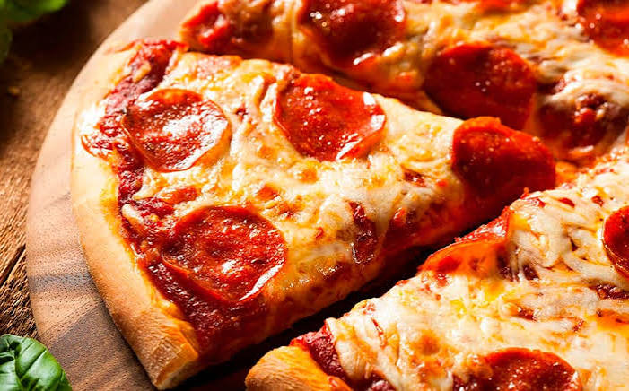

Para preparar la masa perfecta, mezcla en un bol harina de trigo,
agua tibia, levadura, una pizca de azúcar, sal y un buen chorro de aceite de oliva, amasando con energía hasta
obtener una textura elástica y suave que dejarás reposar en un lugar cálido hasta que duplique su tamaño, momento en el cual la extenderás con los dedos
sobre una bandeja previamente engrasada para darle la clásica forma redonda y delgada.
Una vez lista la base, distribuye con una cuchara una capa generosa
de salsa de tomate casera sazonada con orégano, cúbrela por completo con abundante queso mozzarella rallado
junto a tus ingredientes favoritos como jamón o pepperoni, y llévala de inmediato a un horno precalentado a máxima potencia durante unos diez minutos hasta
que los bordes estén bien dorados y crujientes y el queso se haya derretido por completo formando burbujas doradas.